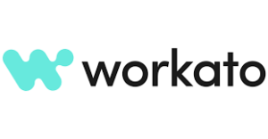

Comparing Leading Application Integration and API Platforms: A Closer Look at MuleSoft, Workato, Boomi, and Azure Integration Services
In the rapidly evolving digital landscape, businesses must seamlessly connect their myriad applications, data, and devices to stay competitive. Enter application integration and API platforms—essential tools for ensuring that your tech ecosystem works harmoniously. Among the top contenders in this space are MuleSoft, Workato, Boomi, and Azure Integration Services. This article provides a detailed comparison of these platforms, with a spotlight on why MuleSoft stands out as a superior choice for many enterprises.
MuleSoft: The Leader in Integration
Overview:
MuleSoft, part of Salesforce, is a heavyweight in the integration space. Its flagship product, Anypoint Platform, offers a robust, unified solution for connecting applications, data, and devices, both on-premises and in the cloud. MuleSoft’s strength lies in its comprehensive API-led connectivity approach, which simplifies and accelerates the integration process.
Key Features:
– API-Led Connectivity: MuleSoft’s approach ensures that APIs are designed, built, and managed in a structured way, promoting reuse and efficiency.
– Unified Platform: Combines data integration, API management, and orchestration capabilities in one platform.
– Extensive Connectivity: Over 200 pre-built connectors for major enterprise applications and services.
– High Scalability: Built to handle complex integrations and large volumes of data with ease.
– Strong Security: Robust security features including encryption, tokenization, and advanced threat protection.
Advantages:
– Flexibility: MuleSoft’s architecture allows for a wide range of integration patterns, from simple point-to-point connections to complex multi-step orchestrations.
– Community and Support: A strong developer community and extensive resources, including tutorials, forums, and a comprehensive knowledge base.
– Integration with Salesforce: Deep integration with Salesforce products, making it a go-to choice for enterprises heavily invested in the Salesforce ecosystem.
Workato: Integration for Business Users

Overview:
Workato positions itself as a user-friendly integration platform that empowers non-technical users to automate workflows. It leverages a low-code/no-code approach, making it accessible to a broader audience within an organization.
Key Features:
– Low-Code/No-Code Interface: Intuitive interface designed for business users with drag-and-drop functionality.
– Pre-Built Recipes: Extensive library of pre-built recipes for common integration tasks.
– AI and Machine Learning: Integrates AI to enhance automation and workflow efficiency.
– Collaborative Tools: Features to promote collaboration between IT and business teams.
Advantages:
– Ease of Use: Ideal for organizations looking to empower business users to build and manage integrations without heavy IT involvement.
– Speed: Quick setup and deployment of integrations.
– Cost-Effective: Suitable for small to medium-sized businesses with straightforward integration needs.
Boomi: Cloud-Native Integration
Overview:
Boomi, a Dell Technologies business, offers a cloud-native integration platform as a service (iPaaS) that simplifies the connection of applications and data. Boomi’s Atmosphere platform is known for its ease of use and quick deployment.
Key Features:
– Cloud-Native Architecture: Designed for cloud-first and hybrid environments.
– Pre-Built Connectors: Hundreds of pre-built connectors for popular applications.
– Visual Interface: Drag-and-drop interface for designing integrations.
– Data Quality and Governance: Built-in tools for data validation, cleansing, and enrichment.
Advantages:
– Rapid Deployment: Accelerated time to value with quick integration setup.
– User-Friendly: Accessible for both technical and non-technical users.
– Scalability: Handles growing integration needs with ease.
Azure Integration Services: Microsoft’s Answer to Integration
Overview:
Azure Integration Services is Microsoft’s comprehensive suite of tools for integrating applications and data. It includes Logic Apps, API Management, Service Bus, and Event Grid.
Key Features:
– Comprehensive Suite: Combines multiple services for end-to-end integration.
– Seamless Azure Integration: Deep integration with other Azure services and Microsoft products.
– Enterprise-Grade Security: Leverages Azure’s robust security framework.
– Scalability and Reliability: Built on Azure’s globally distributed infrastructure.
Advantages:
– Microsoft Ecosystem: Ideal for organizations already invested in Microsoft technologies.
– Flexibility: Suitable for a wide range of integration scenarios, from simple automations to complex enterprise workflows.
– Cost Efficiency: Competitive pricing, especially for existing Azure customers.
Why MuleSoft Stands Out
While each of these platforms brings unique strengths to the table, MuleSoft distinguishes itself through several key advantages:
1. API-Led Connectivity: MuleSoft’s API-first approach ensures that integrations are modular, reusable, and future-proof, reducing the time and effort required for ongoing maintenance.
2. Comprehensive Capabilities: With a unified platform that covers API management, data integration, and orchestration, MuleSoft addresses all integration needs holistically.
3. Scalability and Performance: Designed to handle complex, large-scale integrations, MuleSoft is ideal for enterprises with demanding integration requirements.
4. Salesforce Integration: As part of the Salesforce family, MuleSoft offers unparalleled integration capabilities with Salesforce products, making it a top choice for organizations using Salesforce.
5. Robust Community and Ecosystem: MuleSoft’s extensive community and rich ecosystem of partners and connectors ensure that you have the support and resources needed for successful integrations.
Conclusion
Choosing the right application integration and API platform depends on your specific needs and existing technology investments. While Workato, Boomi, and Azure Integration Services each offer compelling features, MuleSoft stands out for its API-led approach, comprehensive capabilities, and robust performance. For organizations seeking a powerful, scalable, and future-ready integration solution, MuleSoft is a clear leader in the field.